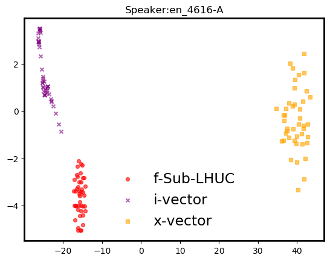

Towards High-Performance and Low-Latency Feature-Based Speaker Adaptation of Conformer Speech Recognition Systems
I. Experimental Setup and ResultsII. Reference
I. Experimental Setup and Results
A. Experimental setup
- The proposed feature-based subspace LHUC adaptation approaches are investigated on the ESPnet recipe configured Conformer ASR systems trained on the 300-hr Switchboard corpus.
- T-SNE visualization of the proposed f-Sub-LHUC feature, i-vector feature, and x-vector feature on the 4-hrs Hub5'00 set (80 speakers).
B. T-SNE Visualization of All Speakers on the Hub5'00 Set
 |
|||
|  | |||
 |
II. Reference
[1] J. Yu et al., “Audio-visual multi-channel recognition of overlapped speech,” in INTERSPEECH, 2020, pp. 3496–3500.